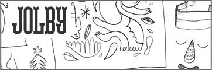

Mission: To provide a platform that fosters art, design, and craft through community collaborations. What is WeMAKE? It’s a gathering, it’s hands on, it’s about community. It’s a place where discoveries and new friendships are made. It’s raw, it’s insightful, it’s collaborative. WeMAKE is about making, making connections, make believing, and making a difference. Through hands on workshops, inspirational experiences, or arts advocacy through social change collaborations, WeMAKE invites you to come make it happen. |
| Connect with us on Twitter |
WeMake presents SketchXChange - A night of inspiration and drawing. |
|  |
Join US! February 24, 2012 from 6-9 with the wonderful Jolby! Space is limited. To sign up send us an email and we will add you to the list. What is SketchXChange? So come join us for an intimate night amongst friends drawing. If you come to enough SketchXChanges you could potentially have a whole sketchbook filled with illustrations by many people in our community. One lucky participant will even get a drawing done in their sketchbook by the guest illustrator! Yay! Beginning in April, SketchXChange will happen every first Friday of the month starting with the talented Miss Marty Kate McDevitt |